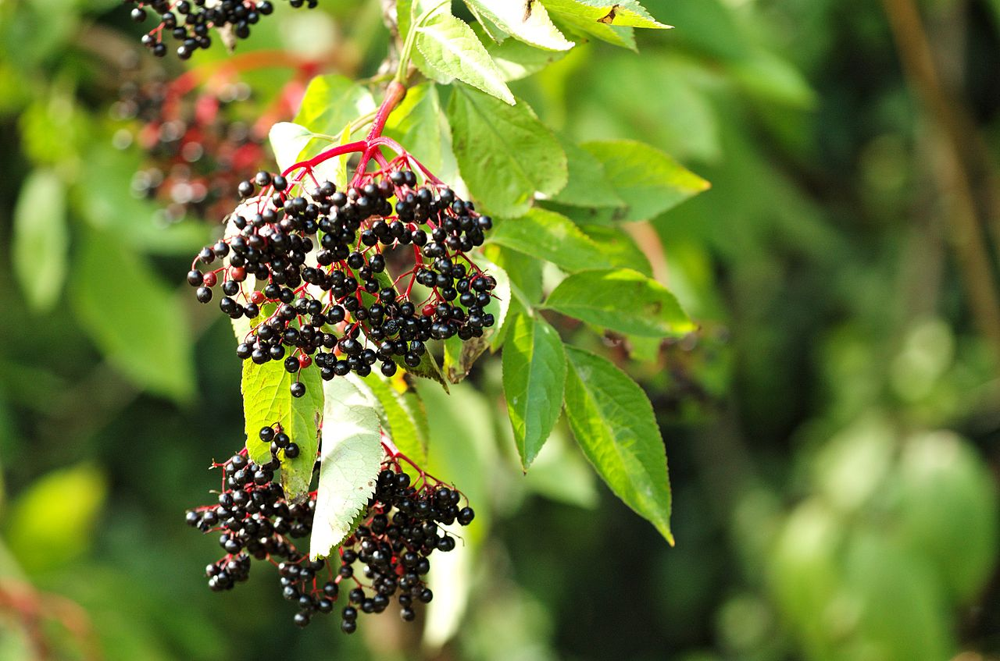

Cikk · Bodza
Bodza és megfázás: megelőzésre nem, a tünetekre talán
Ha ősszel bodzaszörpöt kevernél a teádba, jó, ha tudod: a NIH szerint a bodza nem csökkenti a megfázás esélyét, de néhány vizsgálatban enyhítette a tüneteket. A nyers bogyót viszont hagyd a bokron.

Ősz van, érik a bodza
Ilyenkor még sok helyen ott lóg a fekete bodza a bokrokon, a boltban pedig ott a bodzás szirup, gumicukor és kapszula. Lehet, hogy te is nyúltál már ilyenhez, amikor kaparni kezdett a torkod. Megnéztem, mit mond erről az amerikai Nemzeti Egészségügyi Intézet (NIH) étrend-kiegészítő hivatala.
A forrás az immunműködésről szóló fogyasztói lapjuk, 2025. március 10-i frissítéssel. Rövid, óvatos szöveg, nem kezelési útmutató.
Mit mond a NIH?
Amit a lap ír Néhány vizsgálat szerint a bodza enyhítheti a megfázás és az influenza tüneteit, és gyorsabb felépülést hozhat.
Ami nem jön ki Azt nem tűnik csökkenteni, hogy elkapd a megfázást. Megelőzésre ebből a lapból nem érdemes építeni.
A lap azt is írja, hogy a bodza segíthet a szervezetnek a vírusokkal szemben, csökkentheti a gyulladást és támogathatja az immunrendszert. Ezt lehetőségként mondja, nem bizonyított hatásként.
Amire tényleg figyelj
Szerintem ez a rész fontosabb, mint maga az ígéret. A virág és az érett termés a NIH szerint biztonságosnak tűnik. A kéreg, a levél, a mag, valamint a nyers vagy éretlen bogyó viszont mérgező lehet: hányingert, hányást, hasmenést és kiszáradást okozhat. A főzött termésnél és a rendesen gyártott készítményeknél ez a gond nem áll fenn.
Ha figyelned kell a vércukrodra, vagy az immunrendszert elnyomó gyógyszert szedsz, beszélj az orvosoddal, mielőtt rendszeresen szednéd. A lap szerint a bodza hathat az inzulinra és a vércukorra, és gyengítheti az ilyen gyógyszerek hatását. Terhességben a biztonságát nem ismerik.
Ha szereted a főzött bodzaszörp ízét, ez a lap nem ad okot arra, hogy lemondj róla. Csodát viszont ne várj tőle.
Források
- Office of Dietary Supplements, NIH. Dietary Supplements for Immune Function and Infectious Diseases — Fact Sheet for Consumers. Frissítve: 2025. március 10. Elderberry szakasz. https://ods.od.nih.gov/factsheets/ImmuneFunction-Consumer/
- Macknin M, Wolski K, Negrey J, Mace S. Elderberry Extract Outpatient Influenza Treatment for Emergency Room Patients Ages 5 and Above: a Randomized, Double-Blind, Placebo-Controlled Trial. J Gen Intern Med. 2020;35(11):3271-3277. https://doi.org/10.1007/s11606-020-06170-w · PubMed 32929634